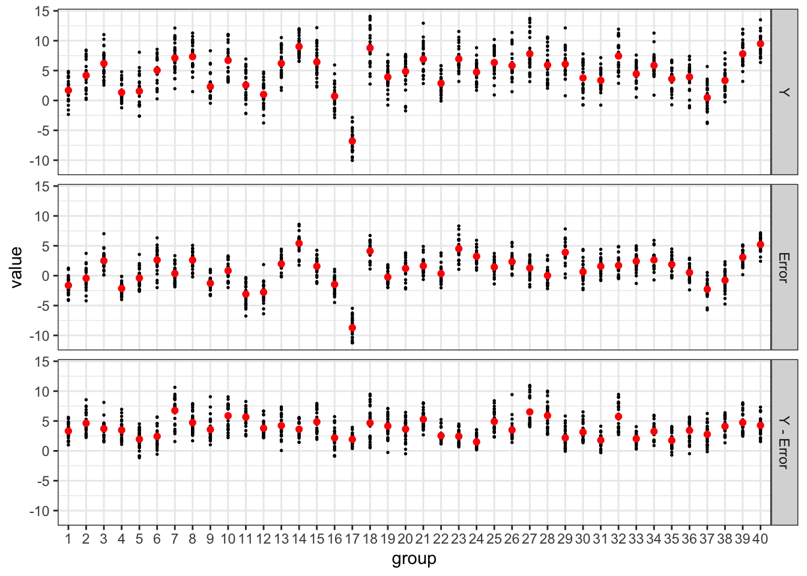
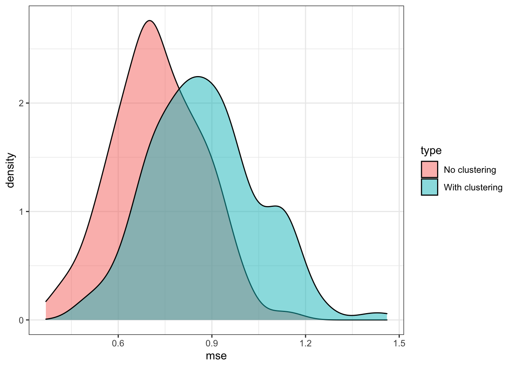
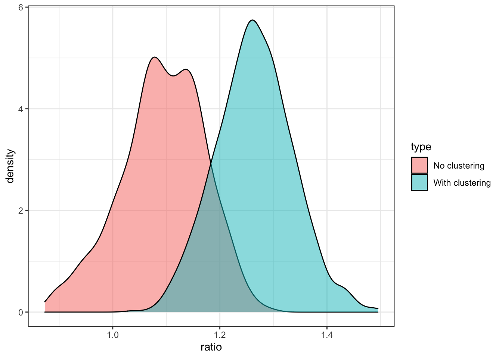

library(tidyverse)
library(data.table)
library(ranger)
library(parallel)
library(grf)
library(rpart)
library(rattle)
library(wooldridge)17 Generalized Random Forest
17.1 Random forest as a local constant regression
Suppose you are interested in estimating \(E[y|X]\) using a dataset and you have trained a random forest model with \(T\) tress. Now, let \(\eta_{i,t}(X)\) takes \(1\) if observation \(i\) belongs to the same leaf as \(X\) in tree \(t\), where \(X\) is a vector of covariates (\(K\) variables). Then, the RF’s predicted value of \(y\) conditional on a particular value of \(X\) (say, \(X_0\)) can be written as follows:
\[ \begin{aligned} \hat{y}(X_0) = \frac{1}{T} \cdot\sum_{t=1}^T\sum_{i=1}^N \frac{\eta_{i,t}(X_0)}{\sum_{i=1}^N\eta_{i,t}(X_0)}\cdot y_i \end{aligned} \]
Note that \(\sum_{i=1}^N\eta_{i,t}(X_0)\) represents the number of observations in the same leaf as \(X_0\). Therefore, \(\sum_{i=1}^N \frac{\eta_{i,t}(X_0)}{\sum_{i=1}^N\eta_{i,t}(X_0)}\cdot y_i\) is the average value of \(y\) of the leaf that \(X_0\) belongs to. So, while looking slightly complicated, it is the average value of \(y\) of the tree \(X_0\) belongs to averaged across the trees, which we know is how RF predicts \(y\) at \(X_0\).
We can switch the summations like this,
\[ \begin{aligned} \hat{y}(X_0) = \sum_{i=1}^N \cdot\frac{1}{T}\sum_{t=1}^T\frac{\eta_{i,t}(X_0)}{\sum_{i=1}^N\eta_{i,t}(X_0)}\cdot y_i \end{aligned} \]
Let \(\alpha(X_i, X_0)\) denote \(\frac{1}{T}\sum_{t=1}^T\frac{\eta_{i,t}(X_0)}{\sum_{i=1}^N\eta_{i,t}(X_0)}\). Then, we can rewrite the above equation as
\[ \begin{aligned} \hat{y}(X_0) = \sum_{i=1}^N \alpha(X_i,X_0) \cdot y_i \end{aligned} \]
Now, it is easy to show that \(\hat{y}(X_0)\) is a solution to the following minimization problem.
\[ \begin{aligned} Min_{\theta} \sum_{i=1}^N \alpha(X_i,X_0)\cdot[y_i -\theta]^2 \end{aligned} \tag{17.1}\]
In this formulation of the problem, \(\alpha(X_i,X_0)\) can be considered the weight given to observation \(i\).
By definition,
- \(0 \leq \alpha(X_i,X_0) \leq 1\)
- \(\sum_{i=1}^N \alpha(X_i,X_0) = 1\)
You may notice that Equation 17.1 is actually a special case of local constant regression where the individual weights are \(\alpha(X_i, X_0)\). Roughly speaking, \(\alpha(X_i, X_0)\) measures how often observation \(i\) share the same leaves as the evaluation point (\(X_0\)) across \(T\) trees. So, it measures how similar \(X_i\) is to \(X_0\) in the RF way, but not based on euclidean distance (which is subject to curse of dimensionality). So, RF is actually a local constant regression with a special way of distributing weights to the individual observations.
17.2 GRF
Interpretation of RF as a local regression led Athey, Tibshirani, and Wager (2019) to conceive GRF, under which various statistics (e.g., conditional average treatment effect, conditional quantile) can be estimated under the unified framework.
You can consider prediction of \(y\) at \(X = X_0\) using RF as a three-step process.
Step 1 is done only once. Every time you make a prediction at a different value of \(X\), you go over steps 2 and 3.
GRF follows exactly the same steps except that it adjusts the way trees are grown in step 1 and adjusts the way the local minimization problem is solved at step 3 (they are actually interrelated) depending on what you would like to estimate.
Here, we follow the notations used in Athey, Tibshirani, and Wager (2019) as much as possible. Here are the list of notations:
- \(O_i\): data for observation \(i\)
- \(\theta\): the statistics of interest (e.g., CATE for causal forest, conditional quantile for for quantile forest)
- \(\nu\): nuisance statistics (you are not interested in estimating this).
- \(\Psi_{\theta, \nu}(O)\): score function
- \(\alpha_i(x)\): weight given to observation \(i\) when predicting at \(X=x\).
In general, GRF solves the following problem to find the estimate of \(\theta\) conditional on \(X_i= x\):
\[ \begin{aligned} \sum_{i=1}^n \alpha_i(x)\Psi_{\theta, \nu}(O_i) = 0 \end{aligned} \tag{17.2}\]
As we saw earlier, GRF is RF when \(\Psi_{\theta, \nu}(O_i) = Y_i-\theta\). There is no nuisance statistics, \(\nu(x)\), in the RF case. By changing how the score function (\(\Psi_{\theta, \nu}(O_i)\)) is defined, you can estimate a wide range of statistics using different approaches under the same estimation framework (this is why it is called generalized random forest). Here are some of the statistics and estimation approaches that are under the GRF framework.
- Conditional expectation (\(E[Y|X]\))
- Regression forest (Random forest for regression)
- Local linear forest
- Boosted regression forest
- Conditional average treatment effect (CATE)
- Causal forest
- Instrumental forest
- Conditional quantile
- Quantile forest
\(I\{\}\) is an indicator function that takes 1 if the condition inside the curly brackets and 0 otherwise.
So far, we have only talked about score functions so far, but not the weights. Do all the approaches listed above use the weights derived from the trees grown by the traditional RF in solving Equation 17.2? You could (you are free to use any weights), but that would not be wise. As mentioned earlier, GRF adjusts the way trees are grown (thus weights) as well according to the score function so that weights are optimized for your objective. This makes sense. Right neighbors should be different based on what you are interesting in estimating.
Specifically, GRF uses the random forest algorithm to grow trees based on pseudo outcome (\(\rho_i\)) derived from the score function that is specific to the type of regression you are running, but not on \(Y\). Basically, you are using exactly the same algorithm as the traditional RF we saw in Section 6.2 except that \(Y\) is swapped with the pseudo outcome.
See Athey, Tibshirani, and Wager (2019) for how the pseudo outcome is derived from a score function in general.
Note that \(\hat{\theta}_P\) in the pseudo outcomes presented above is the solution to Equation 17.2 with their respective score functions using the data in the parent node. For example, \(\hat{\theta}_P = \bar{Y}_p\) for RF, which is the average value of \(Y\) in the parent node. In quantile forest, \(\hat{\theta}_P\) is the \(q\)th quantile of the parent node if you are estimating the \(q\)the conditional quantile.
Finally, here are the conceptual steps of GRF:
The training step is done only once (trees are built only once). But, whenever you predict \(\theta(X)\) at different values of \(X\), you go through the prediction step.
Orthogonal random forest (a forest-based heterogeneous treatment effect estimator like causal forest), on the other hand, build trees every time when predicting treatment effect \(\theta(X)\) at particular values of \(X\), which is why orthogonal random forest takes a very long time especially when there are many evaluation points. Orthogonal random forest is covered in Chapter 13.
17.3 Examples of GRF
17.3.1 Random forest as a GRF
Here, we take a look at RF as a GRF as an illustration to understand the general GRF procedure better. When \(\Psi_{\theta, \nu}(Y_i)\) is set to \(Y_i - \theta\), then GRF is equivalent to the traditional RF. By plugging \(Y_i - \theta\) into Equation 17.2, the estimate of \(E[Y|X=X_0]\), \(\theta(X_0)\), is identified by solving
\[ \begin{aligned} \sum_{i=1}^n \alpha_i(X_0)(Y_i - \theta) = 0 \end{aligned} \tag{17.3}\]
The weights \(\alpha_i(X_i, X_0)\) are defined as follows:
\[ \begin{aligned} \alpha_i(X_i, X_0) = \frac{1}{T}\cdot\sum_{t=1}^T\frac{\eta_{i,t}(X_0)}{\sum_{i=1}^N\eta_{i,t}(X_0)} \end{aligned} \]
, where \(\eta_{i,t}(X_0)\) is 1 if observation \(i\) which has feature values \(X_i\) belongs to the same leaf as \(X_0\).
Step 1: Grow trees:
Now, let’s consider growing trees to find \(\alpha_i(X_0)\) in Equation 17.3. For a given sample and set of variables randomly selected, GRF starts with solving the unweighted version of Equation 17.3.
\[ \begin{aligned} \sum_{i=1}^n Y_i - \theta = 0 \end{aligned} \tag{17.4}\]
The solution to this problem is simply the mean of \(Y\), which will be denoted as \(\bar{Y}_P\), where \(P\) represents the parent node. Here, the parent node include all the data points as this is the first split.
Then the pseudo outcome (\(\rho_i\)) that is used in splitting is
\[ \begin{aligned} \rho_i = Y_i - \bar{Y}_P \end{aligned} \]
Now, a standard CART regression split is applied on the pseudo outcomes. That is, the variable-threshold combination that maximizes the following criteria is found:
\[ \begin{aligned} \tilde{\Delta}(C_1, C_2) = \frac{(\sum_{i \in C_1} \rho_i)^2}{N_{C_1}} + \frac{(\sum_{i \in C_2} \rho_i)^2}{N_{C_2}} \end{aligned} \tag{17.5}\]
where \(C_1\) and \(C_2\) represent two child node candidates for a given split. Since \(\bar{Y}_P\) is just a constant, it is equivalent to splitting on \(Y_i\). So, this is exactly the same as how the traditional RF builds trees (see Section 6.1.2 for the rationale behind maximizing the criteria presented in Equation 17.5).
Once the best split is identified, each of the new child nodes is split following the exactly the same procedure. Splitting continues until one of the user-specified condition prevent a further splitting. Many trees from bootstrapped samples are created (just like the regular random forest) and they form a forest. This shows that the GRF with \(\Psi_{\theta, \nu}(Y_i, X_i) = Y_i - \theta\) grows trees in the same manner as the traditional RF. RF in GRF is implemented by regression_forest(). But, note that running ranger() and regression_forest() will not result in the same forest because of the randomness involved in resampling and random selection of variables. Only their algorithms are equivalent
Step 2: Predict:
To predict \(E[Y|X=X_0]\), Equation 17.3 is solved
\[ \begin{aligned} \sum_{i=1}^N \alpha_i(X_i, X_0)(Y_i-\theta) = 0 \end{aligned} \]
So,
\[ \begin{aligned} \theta(X_0) & = \frac{\sum_{i=1}^N \alpha_i(X_0)Y_i}{\sum_{i=1}^N \alpha_i(X_0)}\\ & = \sum_{i=1}^N \alpha_i(X_0)Y_i \;\; \mbox{(since } \sum_{i=1}^N \alpha_i(X_0) = 1\mbox{)} \\ & = \sum_{i=1}^N \huge[\normalsize \frac{1}{T}\cdot\sum_{t=1}^T\frac{\eta_{i,t}(X_0)}{\sum_{i=1}^N\eta_{i,t}(X_0)}\cdot y_i\huge]\\ & = \frac{1}{T} \cdot\sum_{t=1}^T\sum_{i=1}^N \frac{\eta_{i,t}(X_0)}{\sum_{i=1}^N\eta_{i,t}(X_0)}\cdot y_i \;\; \mbox{(changing the order of the summations)} \\ & = \frac{1}{T} \cdot\sum_{t=1}^T \bar{Y}_t \end{aligned} \]
So, \(\theta(X_0)\) from GRF is the average of tree-specific predictions for \(X_0\), which is exactly how RF predicts \(E[Y|X=X_0]\) as well.
So, it has been shown that GRF with \(\Psi_{\theta, \nu}(Y_i)=Y_i - \theta\) grows trees in the same manner as the traditional RF and also that GRF predicts \(E[Y|X=X_0]\) in the same manner as the traditional RF. So, RF is a special case of GRF, where \(\Psi_{\theta, \nu}(Y_i)=Y_i - \theta\).
17.3.2 Causal forest as a GRF
Causal forest (with a single treatment variable) as an R-learner is a GRF with
\[ \begin{aligned} \Psi_{\theta, \nu}(O_i) = [(Y_i - E[Y|X_i])- \theta(X_i)(T_i - E[T|X_i])](T_i - E[T|X_i]) \end{aligned} \]
In practice \(E[Y|X_i]\) and \(E[T|X_i]\) are first estimated using appropriate machine learning methods (e.g., lasso, random forest, gradient boosted forest) in a cross-fitting manner and then the estimation of \(Y_i - E[Y|X_i]\) and \(T_i - E[T|X_i]\) are constructed. Let’s denote them by \(\tilde{Y}_i\) and \(\tilde{T}_i\). Then the score function is written as
\[ \begin{aligned} \Psi_{\theta} = (\tilde{Y}_i- \theta\tilde{T}_i)\tilde{T}_i \end{aligned} \tag{17.6}\]
So, the conditional treatment effect at \(X=X_0\), \(\theta(X_0)\), is estimated by solving the following problem:
\[ \begin{aligned} \hat{\theta}(X_0) = \sum_{i=1}^N \alpha_i(x)(\tilde{Y_i} - \theta\cdot \tilde{T_i})\tilde{T_i} = 0 \end{aligned} \tag{17.7}\]
where \(\alpha_i(x)\) is the weight obtained from the trees built using random forest on the pseudo outcomes that are derived from the score function (Equation 17.6).
For a given parent node \(p\), the pseudo outcomes are defined as
\[ \begin{aligned} \rho_i = (\tilde{Y}_i- \hat{\theta}_P\tilde{T}_i)\tilde{T}_i \end{aligned} \]
where \(\hat{\theta}_P\) is the solution of the following problem using the observations in the parent node:
\[ \begin{aligned} \sum_{i=1}^N \tilde{T_i}(\tilde{Y_i}-\theta \tilde{T_i}) = 0 \end{aligned} \]
, which is the unweighted version of Equation 17.7.
The standard CART splitting algorithm is applied on the pseudo outcomes to build trees.
17.4 Honesty
GRF applies honesty when it trains forests. Specifically, when building a tree, the subsample for the tree randomly selected without replacement is first split into two groups: subsample for splitting and prediction. Then, the a tree is trained on the subsample for splitting and then find the splitting rules using the standard CART algorithm. However, when predicting (say \(E[Y|X]\) at \(X=x\)), the value of \(Y\) from the subsample for splitting are NOT used. Rather, only the splitting rules are taken from the trained tree and then they are applied to the subsample for prediction (Figure 17.1 illustrates this process).
Code
DiagrammeR::grViz(
"
digraph {
graph [ranksep = 0.2, fontsize = 4]
node [shape = box]
SS [label = 'Subsample for splitting']
SP [label = 'Subsample for predicting']
BD [label = 'Sample for the tree']
TT [label = 'Trained tree']
PV [label = 'Predicted value']
edge [minlen = 2]
BD->SP
BD->SS
SS->TT
SP->PV
TT->SP [label='apply the splitting rules']
{ rank = same; SS; SP}
{ rank = same; TT}
{ rank = same; PV}
}
"
)Let’s demonstrate this using a very simple regression tree with two terminal nodes using the mlb data from the wooldridge package.
data(mlb1, package = "wooldridge")
mlb1_dt <- data.table(mlb1)We would like to train a RF using this data where the dependent variable is logged salary (lsalary). We will illustrate the honesty rule by working on building a single tree within the process of building a forest.
We first sample the data without replacement. Here, we draw half of the entire sample randomly without replacement following the default value of 0.5 for the sample.fraction parameter.
set.seed(358349)
num_obs <- nrow(mlb1_dt)
row_indices <- sample(seq_len(num_obs), num_obs / 2, replace = FALSE)
boot_mlb1_dt <- mlb1_dt[row_indices, ]boot_mlb1_dt is the data that are involved in this tree. The rest of the samples in mlb1_dt will have nothing to do with this tree whatsoever.
We now split the sampled data into two groups: for splitting and prediction.
num_obs_sub <- nrow(boot_mlb1_dt)
rows_split <- sample(seq_len(num_obs_sub), num_obs_sub / 2, replace = FALSE)
#=== data for splitting ===#
split_data <- boot_mlb1_dt[rows_split, ]
#=== data for prediction ===#
eval_data <- boot_mlb1_dt[-rows_split, ]We then train a tree using the data for splitting (split_data):
#=== build a simple tree ===#
tree_trained <-
rpart(
lsalary ~ hits + runsyr,
data = split_data,
control = rpart.control(minsplit = 60)
)
fancyRpartPlot(tree_trained, digits = 4)
So the splitting rule is hits < 338 as shown in Figure 17.2. At the terminal nodes, you see the prediction of lsalary: \(12.41\) for the left and \(14.36\) for the right. These predictions are NOT honest. They are obtained from the observed values of lsalary within the node using the splitting data (the data the tree is trained for). Instead of using these prediction values, an honest prediction applied the splitting rules (hits < 338) to the data reserved for prediction.
(
honest_pred <- eval_data[, mean(lsalary), by = hits < 338]
) hits V1
1: TRUE 12.51945
2: FALSE 14.09740So, instead of \(12.41\) and \(14.36\), the predicted values from the honest tree are \(12.52\) and \(14.1\) for the left and right nodes, respectively. Trees are built in this manner many times to form a forest.
More generally, in GRF, honesty is applied by using the evaluation data to solve Equation 17.2 based on the weight \(\alpha_i(x)\) derived from the trained forest using the splitting data. Honesty is required for the GRF estimator to be consistent and asymptotically normal (Athey, Tibshirani, and Wager 2019). However, the application of honesty can do more damage than help when the sample size is small.
17.5 Understanding GRF better by example
This section goes through CF model training and CATE prediction step by step with codes to enhance our understanding of how GRF (and CF) works. In the process, we also learn the role of many of the hyper-parameters that are common across models that fall under GRF. We also learn the role of hyper-parameter that are specific to CF as well.
While the process explained here is for CF, the vast majority of the process is exactly the same for other models under GRF. Here are some differences:
- Orthogonalization of the data at the beginning for CF
- The definition of the pseudo outcome (but, the way they are used in the algorithm is identical once they are defined)
- The role of
min.node.size,alpha, andimbalance.penaltyused for safeguarding against extreme splits
Obviously, the codes here are only for illustration and should not be used in practice.
We will use a synthetic data generated from the following DGP:
\[ \begin{aligned} y = \theta(X)\cdot T + g(X) + \mu \end{aligned} \]
, where
\[ \begin{aligned} \theta(X) & = 2 + 3 \times x_1^2 - \sqrt{3 \times x_2^3 + 1}\\ g(X) & = 10 \cdot [log(x_2+1) + 2\cdot x_3\times x_2] \end{aligned} \]
We have 10 feature variables \(x_1, \dots, x_{10}\) and only \(x_1\) through \(x_3\) play a role.
- \(x_1, x_2 \sim U[0, 3]^2\)
- \(x_3 \sim N(1, 1)\)
- \(x_4, \dots, x_{10} \sim U[0, 1]^{7}\)
The error term and the treatment variable is defined as follows.
- \(\mu \sim N(0, 1)\)
- \(T \sim Ber(0.5)\)
set.seed(73843)
N <- 1000 # number of observations
x4_x10 <-
matrix(runif(N * 7), nrow = N) %>%
data.table() %>%
setnames(names(.), paste0("x", 4:10))
(
data <-
data.table(
x1 = 3 * runif(N),
x2 = 3 * runif(N),
x3 = rnorm(N, mean = 1, sd = 1),
mu = rnorm(N),
T = runif(N) > 0.5
) %>%
#=== theta(X) ===#
.[, theta_x := 2 + 3 * x1^2 - sqrt(3* x2^3 + 2)] %>%
#=== g(X) ===#
.[, g_x := 10 * (log(x2 + 1) + 2 * x3 * x2)] %>%
.[, y := theta_x * T + g_x + mu] %>%
.[, .(y, T, x1, x2, x3)] %>%
cbind(., x4_x10)
) y T x1 x2 x3 x4 x5
1: 31.239440 FALSE 2.6951250 1.1965331 0.96678638 0.7210003 0.6207226
2: 10.144462 FALSE 0.7919764 0.2722983 1.34510173 0.6267043 0.8869069
3: 48.939026 TRUE 2.7143095 0.9040185 1.19934789 0.5620508 0.5455276
4: 36.405483 TRUE 1.0628966 1.0659064 1.20667390 0.3638505 0.3201202
5: 11.893620 FALSE 2.8824810 1.8198348 0.03356061 0.2570614 0.1447951
---
996: 74.029985 TRUE 1.6485987 2.8588233 1.04216169 0.6835214 0.7266654
997: 21.176748 TRUE 2.0208231 0.4248353 0.49803263 0.2851495 0.8076055
998: 3.388729 FALSE 1.9203044 0.5051511 -0.02137629 0.9961128 0.8446825
999: 9.459730 FALSE 1.7274390 0.3468632 0.85507892 0.9669933 0.4943592
1000: 109.282950 FALSE 1.7030476 2.1927368 2.21194227 0.1442201 0.6783044
x6 x7 x8 x9 x10
1: 0.78698773 0.88919853 0.25543604 0.05640156 0.3560356
2: 0.44413365 0.27657781 0.08810472 0.20397022 0.7982468
3: 0.45238337 0.41956478 0.69912161 0.05602666 0.5905471
4: 0.71060284 0.11400965 0.43547480 0.57807247 0.5707400
5: 0.46912302 0.31966840 0.90711440 0.15150039 0.9426457
---
996: 0.05036928 0.18803515 0.40981100 0.04716956 0.6443493
997: 0.14171969 0.08375323 0.78676094 0.27132948 0.6570423
998: 0.36225572 0.47555166 0.40332714 0.28135063 0.9657502
999: 0.43818445 0.59426511 0.53555370 0.91860942 0.3339725
1000: 0.23674030 0.25005706 0.05512990 0.24352242 0.722739717.5.1 Orthogonalization of \(Y\) and \(T\)
Causal forest (and instrumental forest) first orthogonalizes \(Y\) and \(T\). This is not the case for the other GRF methods. By default, causal_forest() uses random forest to estimate \(E[Y|X]\) and \(E[T|X]\), and then use out-of-bag predictions. Since the treatment assignment is randomized, we could use \(0.5\) for as the estimate for \(E[T|X]\) for all the observations. But, we will estimate both in this example.
#--------------------------
# E[Y|X]
#--------------------------
#=== train an RF on y ===#
y_rf_trained <-
regression_forest(
X = data[, .(x1, x2, x3)],
Y = data[, y]
)
#=== OOB estimates of E[Y|X] ===#
ey_x_hat <- y_rf_trained$predictions
#--------------------------
# E[T|X]
#--------------------------
#=== train an RF on T ===#
t_rf_trained <-
probability_forest(
X = data[, .(x1, x2, x3)],
Y = data[, factor(T)]
)
#=== OOB estimates of E[T|X] ===#
et_x_hat <- t_rf_trained$predictions[, 2] # get the probability of T = 1Let’s now orthogonalize \(Y\) and \(T\),
data[, `:=`(y_tilde = y - ey_x_hat, t_tilde = T - et_x_hat)]Here is what the data looks like:
head(data) y T x1 x2 x3 x4 x5 x6
1: 31.23944 FALSE 2.6951250 1.1965331 0.96678638 0.7210003 0.6207226 0.7869877
2: 10.14446 FALSE 0.7919764 0.2722983 1.34510173 0.6267043 0.8869069 0.4441337
3: 48.93903 TRUE 2.7143095 0.9040185 1.19934789 0.5620508 0.5455276 0.4523834
4: 36.40548 TRUE 1.0628966 1.0659064 1.20667390 0.3638505 0.3201202 0.7106028
5: 11.89362 FALSE 2.8824810 1.8198348 0.03356061 0.2570614 0.1447951 0.4691230
6: 78.17796 TRUE 1.3823141 1.6858092 1.91198906 0.6044051 0.8637295 0.8509355
x7 x8 x9 x10 y_tilde t_tilde
1: 0.8891985 0.25543604 0.05640156 0.3560356 -5.6636071 -0.5296217
2: 0.2765778 0.08810472 0.20397022 0.7982468 -4.3210587 -0.4788832
3: 0.4195648 0.69912161 0.05602666 0.5905471 11.9768866 0.4703248
4: 0.1140096 0.43547480 0.57807247 0.5707400 0.2253922 0.5534958
5: 0.3196684 0.90711440 0.15150039 0.9426457 -8.4757974 -0.5011004
6: 0.7302472 0.91788817 0.76401947 0.9238519 -0.6532169 0.511380917.5.2 Building trees
Preparing Data:
When building a tree, GRF use sampling without replacement instead of sampling with replacement as a default for RF implemented by ranger(). sample.fraction parameter determines the fraction of the entire sample drawn for each tree. Let’s use the default value, which is \(0.5\).
(
data_for_the_first_tree <- data[sample(1:N, 0.5 * N, replace = FALSE), ]
) y T x1 x2 x3 x4 x5
1: 24.9025560 TRUE 2.33286846 0.2477951 0.8980258 0.50396757 0.08485642
2: 34.4617113 FALSE 0.36784858 0.9011077 1.5373583 0.83508147 0.10087835
3: 4.8131199 FALSE 0.35464284 0.1992028 0.9367359 0.84134117 0.24929184
4: 9.7958485 FALSE 2.54230941 0.7135930 0.3197887 0.05861231 0.34530906
5: -0.2399451 FALSE 0.88094406 0.1036436 -0.4209629 0.63817225 0.24831807
---
496: 81.0907489 FALSE 0.03481615 2.9859855 1.1341612 0.93868895 0.10845090
497: 45.7373362 TRUE 1.11687411 2.1342024 0.8219353 0.18140031 0.52911682
498: 81.7731653 TRUE 0.50482529 1.3572611 2.7416683 0.18128877 0.12207408
499: -9.1361410 FALSE 2.68976646 2.2431148 -0.4614975 0.27532629 0.87256993
500: 21.7882929 TRUE 0.41004493 2.6174698 0.3060092 0.43608964 0.80218867
x6 x7 x8 x9 x10 y_tilde t_tilde
1: 0.5330777 0.0207677 0.75254547 0.28037254 0.5548497 10.348401 0.5165125
2: 0.6637159 0.8061779 0.34381605 0.74622506 0.3308037 -3.174286 -0.4424109
3: 0.8667869 0.2351434 0.26094758 0.48312612 0.3273708 -4.899194 -0.4703968
4: 0.7823649 0.8942680 0.73156533 0.55466979 0.6760430 -13.150179 -0.5710382
5: 0.8369564 0.9980671 0.02740824 0.36841730 0.6603217 -2.098577 -0.5943349
---
496: 0.6255471 0.4409065 0.73793156 0.16597397 0.2782975 6.647750 -0.4746825
497: 0.7703280 0.8028466 0.79829377 0.72936803 0.3953351 -1.998624 0.4751614
498: 0.1248504 0.7362142 0.28138516 0.45800679 0.1410164 -3.481113 0.5902025
499: 0.9890033 0.6309494 0.11897912 0.05518469 0.2093569 -7.215089 -0.5353184
500: 0.7045508 0.3854207 0.34308977 0.88430430 0.5601304 -5.074021 0.4222428By default, honest splitting is implemented (honesty = TRUE). The honesty.fraction parameter determines the fraction of the randomly sampled data (data_for_the_first_tree), which will be used for determining splitting decisions. We will use the default value of honesty.fraction, which is \(0.5\).
#=== number of observations ===#
N_d <- nrow(data_for_the_first_tree)
#=== indices ===#
J1_index <- sample(1:N_d, 0.5 * N_d, replace = FALSE)
#=== data for determining splitting rules ===#
(
data_J1 <- data_for_the_first_tree[J1_index, ]
) y T x1 x2 x3 x4 x5
1: 32.168156 TRUE 1.3202547 1.1420641 0.91158029 0.1686512 0.79225674
2: 63.700906 FALSE 0.5488392 1.5795742 1.65239047 0.3851233 0.64512684
3: 41.849736 TRUE 2.7792941 0.8210709 0.79316984 0.9278186 0.49904726
4: 30.063201 FALSE 0.9203382 1.2250174 0.87263820 0.6032529 0.54814557
5: 74.092869 TRUE 1.3308917 1.7572783 1.75875073 0.1445248 0.19666780
---
246: 59.044593 FALSE 2.9685008 1.6885064 1.49969895 0.5313985 0.15660748
247: 79.666353 TRUE 2.3577697 1.1953114 2.31067728 0.4455486 0.01321071
248: 37.203768 FALSE 2.1998783 1.6630233 0.78424732 0.1420179 0.95015816
249: 14.141558 TRUE 1.1786313 1.1804383 0.05553601 0.8050410 0.10626896
250: 5.156938 FALSE 0.5296012 1.1397422 -0.09301202 0.5284173 0.92249024
x6 x7 x8 x9 x10 y_tilde
1: 0.70056216 0.3013820 0.7349177 0.434629694 0.3931467 1.1037999
2: 0.94440025 0.7271771 0.4302308 0.009344572 0.2357119 -3.6279591
3: 0.02594909 0.2632990 0.7471883 0.913540913 0.4693372 12.4304959
4: 0.79733568 0.1367518 0.9528761 0.445233749 0.8557955 -2.0274153
5: 0.50274839 0.7840356 0.2542098 0.023763730 0.9715826 -3.1022041
---
246: 0.52848998 0.7282229 0.5323203 0.261717018 0.2347180 -13.0882951
247: 0.64246528 0.4421114 0.8446926 0.637843209 0.5676528 4.2071069
248: 0.20126400 0.1563281 0.2404751 0.415536469 0.7778129 -3.7512625
249: 0.16361912 0.7145285 0.7101117 0.600831013 0.5476061 -0.2123989
250: 0.61208680 0.1649016 0.9978272 0.497071444 0.5043290 -1.0637976
t_tilde
1: 0.4440064
2: -0.4874906
3: 0.4410276
4: -0.5482126
5: 0.5162645
---
246: -0.5135525
247: 0.5212281
248: -0.3979431
249: 0.4469103
250: -0.5387802As you can see, we are just using a quarter of the original dataset (sample.fraction \(\times\) honesty.fraction = \(0.5 \times 0.5\)). Here is the data for repopulating the tree once the tree is built.
#=== data for repopulate the tree ===#
(
data_J2 <- data_for_the_first_tree[-J1_index, ]
) y T x1 x2 x3 x4 x5
1: 34.4617113 FALSE 0.3678486 0.9011077 1.53735835 0.83508147 0.10087835
2: 9.7958485 FALSE 2.5423094 0.7135930 0.31978875 0.05861231 0.34530906
3: -0.2399451 FALSE 0.8809441 0.1036436 -0.42096291 0.63817225 0.24831807
4: 33.8904668 TRUE 2.7083542 0.7223860 0.28685672 0.47576373 0.60371551
5: 42.0187752 FALSE 1.6180228 1.3468851 1.20854200 0.98942551 0.32931981
---
246: 112.6993157 FALSE 1.8652859 2.4059719 2.08180730 0.34569836 0.76473310
247: -1.1378434 TRUE 0.4855630 1.9038798 -0.28249533 0.67252894 0.21756645
248: 48.9883794 TRUE 2.2455929 1.4029347 1.00599231 0.30995650 0.47503141
249: 21.5579803 TRUE 1.9840075 2.8772854 0.05766394 0.95584669 0.02832178
250: 45.7373362 TRUE 1.1168741 2.1342024 0.82193525 0.18140031 0.52911682
x6 x7 x8 x9 x10 y_tilde t_tilde
1: 0.6637159 0.8061779 0.34381605 0.7462251 0.3308037 -3.174286 -0.4424109
2: 0.7823649 0.8942680 0.73156533 0.5546698 0.6760430 -13.150179 -0.5710382
3: 0.8369564 0.9980671 0.02740824 0.3684173 0.6603217 -2.098577 -0.5943349
4: 0.4801798 0.4673316 0.63830962 0.5097753 0.5330969 10.822273 0.4342292
5: 0.5914005 0.7734454 0.18005650 0.1522792 0.8920292 -5.334219 -0.5456630
---
246: 0.3229140 0.7352488 0.41670762 0.7729425 0.9237995 -3.439394 -0.4548755
247: 0.8127880 0.2702545 0.58958613 0.2344333 0.7674877 -2.027607 0.4568964
248: 0.3251172 0.1759780 0.42293907 0.3705066 0.1681080 9.109288 0.5642331
249: 0.5679956 0.6444142 0.53908269 0.2941420 0.9354850 1.957145 0.5125393
250: 0.7703280 0.8028466 0.79829377 0.7293680 0.3953351 -1.998624 0.4751614Determining splitting rules:
Now let’s find the splitting rules using data_J1 (Remember, data_J2 is not used).
We are at the root node to which all the observations belong. Let’s first calculate the pseudo outcome. Finding pseudo outcomes starts from solving the unweighted version of Equation 17.2 using the samples in the parent node (root node here) in general. For CF, it is
\[ \begin{aligned} \sum_{i=1}^n (\tilde{Y}_i - \theta\tilde{T}_i)\cdot \tilde{T}_i = 0 \end{aligned} \tag{17.8}\]
because the score function for CF is \((\tilde{Y}_i - \theta\tilde{T}_i)\cdot \tilde{T}_i\). So,
\[ \begin{aligned} \theta_P = \frac{\sum_{i=1}^n \tilde{Y}_i\cdot \tilde{T}_i}{\sum_{i=1}^n\tilde{T}_i\cdot \tilde{T}_i} \end{aligned} \]
(
theta_p <- data_J1[, sum(y_tilde * t_tilde)/sum(t_tilde * t_tilde)]
)[1] 7.212476The pseudo outcome for CF is \((\tilde{Y}_i - \theta_P\tilde{T}_i)\cdot \tilde{T}_i\). Let’s define that in data_J1.
data_J1[, rho := (y_tilde - theta_p * t_tilde) * t_tilde]Now, the number of variables to use for splitting is determined by the mtry parameter. Its default is min(ceiling(sqrt(ncol(X))+20), ncol(X)), where X is the feature matrix. Here ncol(X) is 10. So, mtry is set to 10. Following this, we will use all three variables for splitting here. Let \(C_j\) (\(j = 1, 2\)) and \(N_j\) denote the child node \(j\) and the number of observations in child node \(j\), respectively. We will write a function that works on a single feature variable to find all the threshold values that would result in unique splits, and then return the following information:
- \((\sum_{i\in C_j} \rho_i)^2\)
- \(N_j\)
- \(\sum_{i=1}^{N_j} (T_i - \bar{T})^2\) (we will call this
info_size) - the number of treated and control units
The output allows us to calculate the heterogeneity score of the split defined as
\[ \begin{aligned} \sum_{j=1}^2 \frac{(\sum_{i\in C_j} \rho_i)^2}{N_j}. \end{aligned} \]
It also allows us to eliminate some of the splits based on mtry, alpha, and imbalance.penalty parameters.
get_ss_by_var <- function(feature_var, outcome_var, parent_data)
{
temp_data <-
copy(parent_data) %>%
setnames(feature_var, "temp_var") %>%
setnames(outcome_var, "outcome")
#=== define a sequence of values of hruns ===#
thr_seq <-
temp_data[order(temp_var), unique(temp_var)] %>%
#=== get the rolling mean ===#
frollmean(2) %>%
.[-1]
#=== get RSS ===#
ss_value <-
lapply(
thr_seq,
function(x){
return_data <-
temp_data[, .(
het_score = sum(outcome)^2/.N,
nobs = .N,
info_size = sum((T - mean(T))^2),
num_treated = sum(T),
num_ctrl = sum(!T)
), by = temp_var < x] %>%
setnames("temp_var", "child") %>%
.[, child := ifelse(child == TRUE, "Child 1", "Child 2")] %>%
.[, thr := x]
return(return_data)
}
) %>%
rbindlist() %>%
.[, var := feature_var] %>%
relocate(var, thr, child)
return(ss_value)
}For example, here is the output for x1.
get_ss_by_var("x1", "rho", data_J1)[] var thr child het_score nobs info_size num_treated num_ctrl
1: x1 0.00332332 Child 2 0.04640943 249 62.1285141 130 119
2: x1 0.00332332 Child 1 11.55594717 1 0.0000000 1 0
3: x1 0.02031884 Child 2 0.03481370 248 61.8548387 130 118
4: x1 0.02031884 Child 1 4.31689906 2 0.5000000 1 1
5: x1 0.03951186 Child 2 0.24122929 247 61.5789474 130 117
---
494: x1 2.92655569 Child 2 76.66320951 3 0.6666667 1 2
495: x1 2.95306339 Child 1 0.30401476 248 61.8548387 130 118
496: x1 2.95306339 Child 2 37.69783018 2 0.5000000 1 1
497: x1 2.96828632 Child 1 0.09327709 249 62.0803213 131 118
498: x1 2.96828632 Child 2 23.22599563 1 0.0000000 0 1Repeating this for all the feature variables,
(
thr_score_data <-
lapply(
paste0("x", 1:10),
function(x) get_ss_by_var(x, "rho", data_J1)
) %>%
rbindlist()
) var thr child het_score nobs info_size num_treated num_ctrl
1: x1 0.00332332 Child 2 4.640943e-02 249 62.1285141 130 119
2: x1 0.00332332 Child 1 1.155595e+01 1 0.0000000 1 0
3: x1 0.02031884 Child 2 3.481370e-02 248 61.8548387 130 118
4: x1 0.02031884 Child 1 4.316899e+00 2 0.5000000 1 1
5: x1 0.03951186 Child 2 2.412293e-01 247 61.5789474 130 117
---
4976: x10 0.98350685 Child 2 4.706587e-01 3 0.6666667 2 1
4977: x10 0.98856960 Child 1 7.289755e-04 248 61.8991935 129 119
4978: x10 0.98856960 Child 2 9.039296e-02 2 0.0000000 2 0
4979: x10 0.99656474 Child 1 3.553642e-02 249 62.1285141 130 119
4980: x10 0.99656474 Child 2 8.848568e+00 1 0.0000000 1 0Now, we ensure that we have at least as many min.node.size numbers of treated and control units in both child nodes. This provides a safeguard against having a very inaccurate treatment effect estimation. The default value of min.node.size is 5.
min.node.size <- 5 # referred to as mns
#=== check if both child nodes have at least mns control and treatment units ===#
thr_score_data[, mns_met_grup := all(num_ctrl >= min.node.size & num_treated >= min.node.size), by = .(var, thr)]
(
msn_met_data <- thr_score_data[mns_met_grup == TRUE, ]
) var thr child het_score nobs info_size num_treated num_ctrl
1: x1 0.2647367 Child 2 4.5435708 238 59.294118 126 112
2: x1 0.2647367 Child 1 90.1141537 12 2.916667 5 7
3: x1 0.2957597 Child 2 5.5810225 237 59.071730 125 112
4: x1 0.2957597 Child 1 101.7463325 13 3.230769 6 7
5: x1 0.3148280 Child 2 5.0451340 236 58.792373 125 111
---
4510: x10 0.9262760 Child 2 0.4888869 18 3.611111 13 5
4511: x10 0.9331452 Child 1 0.1739244 233 58.223176 119 114
4512: x10 0.9331452 Child 2 2.3837878 17 3.529412 12 5
4513: x10 0.9403202 Child 1 0.1370827 234 58.461538 120 114
4514: x10 0.9403202 Child 2 2.0048350 16 3.437500 11 5
mns_met_grup
1: TRUE
2: TRUE
3: TRUE
4: TRUE
5: TRUE
---
4510: TRUE
4511: TRUE
4512: TRUE
4513: TRUE
4514: TRUENow, we consider how alpha and imbalance.penalty affect the potential pool of feature-threshold combinations. Each child node needs to have at least as large info_size as alpha \(\times\) info_size of the parent node. The info_size of the parent node is
(
info_size_p <- data_J1[, sum((T - mean(T))^2)]
)[1] 62.356By default, alpha is set to 0.05. We use this number.
alpha <- 0.05
msn_met_data[, info_size_met := all(info_size > (alpha * info_size_p)), by = .(var, thr)]
msn_ifs_met <- msn_met_data[info_size_met == TRUE, ]imbalance.penalty is used to further punish splits that introduce imbalance. For example, for feature x1 and thr of 0.2957597,
var thr child het_score nobs info_size num_treated num_ctrl
1: x1 0.2647367 Child 2 4.543571 238 59.294118 126 112
2: x1 0.2647367 Child 1 90.114154 12 2.916667 5 7
mns_met_grup info_size_met
1: TRUE FALSE
2: TRUE FALSEthe unpunished heterogeneity score is 94.6577245. With a non-zero value of imbalance.penalty, the following penalty will be subtracted from the unpunished heterogeneity score: imbalance.penalty * (1/info_size_1 + 1/info_size_2). By default, imbalance.penalty is 0. But, let’s use imbalance.penalty \(= 1\) here.
imbalance.penalty <- 1
msn_ifs_met[, imb_penalty := imbalance.penalty * (1/info_size)]Now, we calculate the heterogeneity score for each feature-threshold with imbalance penalty.
(
het_score_data <- msn_ifs_met[, .(het_with_imbp = sum(het_score - imb_penalty)), by = .(var, thr)]
) var thr het_with_imbp
1: x1 0.2957597 107.0009025
2: x1 0.3148280 89.7830030
3: x1 0.3405788 90.7423400
4: x1 0.3557459 82.0711971
5: x1 0.3599312 88.7968930
---
2226: x10 0.9199764 0.9424508
2227: x10 0.9231653 0.1361964
2228: x10 0.9262760 0.2326482
2229: x10 0.9331452 2.2572036
2230: x10 0.9403202 1.8339034We now find the feature-threshold combination that maximizes the score,
(
best_split <- het_score_data[which.max(het_with_imbp), ]
) var thr het_with_imbp
1: x1 1.930929 953.3717So, we are splitting the root node using x1 with threshold of 1.9309. Here is a visualization of the split,
Code
ggplot(data_J1) +
geom_point(aes(y = rho, x = x1, color = (x1 < best_split[, thr]))) +
scale_color_discrete("Less than the threshold") +
theme_bw() +
theme(legend.position = "bottom")
Now, let’s look at the pseudo outcome and elaborate more on what we are seeing here.
\[ \begin{aligned} \rho_i = (\tilde{Y}_i- \hat{\theta}_P\tilde{T}_i)\tilde{T}_i \end{aligned} \]
Note that \(\hat{\theta}_P\) is just a constant and represents the average treatment effect for the parent node. So, \(\rho_i\) tends to be higher for the observations whose CATE is higher (above-average treatment effect). So, splitting on \(\rho\) (instead of \(Y\)) made it possible to pick the right feature variable x1. This is because x1 is influential in determining CATE and higher values of x1 lead to more positive CATE.
Note that the checks implemented with mtry, alpha, and imbalance.penalty is more important further down a tree. But, the examples above should have illustrated how they are used.
Okay, now let’s split the root node into two child nodes according to the best split on \(\rho\) we found earlier.
depth_2_node_1 <- data_J1[x1 < best_split[, thr], ]
depth_2_node_2 <- data_J1[x1 >= best_split[, thr], ]Let’s consider splitting the second node, depth_2_node_1. We basically follow exactly the same process the we just did. First, find \(\hat{\theta}_P\) for this (parent) node using Equation 17.8 and define the pseudo outcomes.
(
theta_p <- depth_2_node_1[, sum(y_tilde * t_tilde)/sum(t_tilde * t_tilde)]
)[1] 0.8311055depth_2_node_1[, rho := (y_tilde - theta_p * t_tilde) * t_tilde]Now, we find the best split (here we ignore various checks),
(
best_split_d2_n1 <-
lapply(
paste0("x", 1:10),
function(x) get_ss_by_var(x, "rho", depth_2_node_1)
) %>%
rbindlist() %>%
.[, .(het_score = sum(het_score)), by = .(var, thr)] %>%
.[which.max(het_score), ]
) var thr het_score
1: x3 3.827172 610.0837We keep splitting nodes until no splits is possible any more based on the value of min.node.size, alpha, and imbalance.penalty.
To see the role of honesty.prune.leaves, let’s suppose we stopped splitting after the first split based on x with threshold of 1.9309. So, we just two terminal nodes. As stated in Section 17.4, when we do prediction, data_J1 (which is used for determining the splitting rule) is not used. Rather, data_J2 (the data that was set aside) is used. When honesty.prune.leaves = TRUE (default), the tree is pruned so that no leaves are empty. Yes, we made sure that we have certain number of observations in each node with min.node.size, however, that is only for data_J1, not data_J2.
data_J2[, .N, by = x1 < best_split[, thr]] x1 N
1: TRUE 172
2: FALSE 78Okay, so, each child has at least one observation. So, we are not going to prune the tree. If either of the child nodes was empty, then we would have removed the leaves and had the root node as the tree.
As you can see, while data_J1 plays a central role in the tree building process, the other half, data_J2, plays a very small role. However, data_J2 plays the central role in prediction, which will be seen in the next section.
17.5.3 Prediction
Suppose you have built \(T\) trees already. In general for GRF, statistics of interest, \(\theta(X)\), at \(X = X_0\) is found by solving the following equation:
\[ \begin{aligned} \sum_{i=1}^N \alpha_i(X_i, X_0)\psi_{\theta,\nu}(O_i) = 0 \end{aligned} \]
where \(\alpha_i(X_i, X_0)\) is the weight given to each \(i\) calculated based on the trees that have been built. Let \(\eta_{i,t}(X_i, X_0)\) be 1 if observation \(i\) belongs to the same leaf as \(X_0\) in tree \(t\). Then,
\[ \begin{aligned} \alpha_i(X_i, X_0) = \frac{1}{T}\sum_{t=1}^T\frac{\eta_{i,t}(X_i, X_0)}{\sum_{i=1}^N\eta_{i,t}(X_i, X_0)} \end{aligned} \tag{17.9}\]
So, the weight given to observation \(i\) is higher if observation \(i\) belongs to the same leaf as the evaluation point \(X_0\) in more trees.
For CF, since the score function is defined as \(\psi_{\theta,\nu}(O_i) = \tilde{Y}_i - \theta\tilde{T}_i)\cdot \tilde{T}_i\), the equation can be written as
\[ \begin{aligned} \sum_{i=1}^N \alpha_i(X_i, X_0)[\tilde{Y_i} - \theta\cdot \tilde{T_i}]\hat{\tilde{T_i}} = 0 \end{aligned} \]
So,
\[ \begin{aligned} \theta_P = \frac{\sum_{i=1}^n \alpha_i(X_i, X_0)\tilde{Y}_i\cdot \tilde{T}_i}{\sum_{i=1}^n\alpha_i(X_i, X_0)\tilde{T}_i\cdot \tilde{T}_i} \end{aligned} \]
We now illustrate how predictions are done once trees have been built. Let’s first build trees using causal_forest(). min.node.size is set deliberately high so we can work with very simple trees.
You do not need to know how causal_forest() works. You only need to know that causal_forest() build trees for CATE estimation.
set.seed(443784)
cf_trained <-
causal_forest(
X = select(data, starts_with("x")),
Y = data[, y],
W = data[, T],
min.node.size = 50
)After training a causal forest model, we have trees like the one shown in Figure 17.3, which is the first of the \(2000\) trees.
You probably noticed that the total number of samples in the leaves is only \(250\) instead of \(1000\), which is the total number of observations in data. When causal forest was trained on this dataset, only half of the entire sample are randomly selected for building each tree (due to the default setting of sample.fraction = 0.5). The halved sample is further split into two groups, each containing \(250\) observations (due to the default setting of honesty = TRUE and honest.fraction = 0.5). Let’s call them \(J_1\) and \(J_2\). Then, \(J_1\) is used to train a tree to find the splitting rules (e.g., \(x_1 \leq 1.44\) for the first tree). See Section 17.5.2 for how only a subset of the drawn samples was used to determine the splitting rules. Once the splitting rules are determined (tree building process is complete), then \(J_1\) “vacates” the tree. Then, \(J_2\) repopulates the tree. In other words, the splitting rule associated with the tree is applied to each of the samples in \(J_2\) and place it in the node they belong to. So, the size value in each of the terminal nodes represents how many samples in \(J_2\) are in each node. The statistics for each terminal node are from the samples in \(J_2\) within the node. This will become clearer when we talk about finding individual weights.
Let’s take a look at a tree to see what happened. We can use get_tree() to access individual trees from cf_trained.
#=== get the first tree ===#
a_tree <- get_tree(cf_trained, 1)drawn_samples attribute of the tree contains row indices that are selected randomly for this tree.
head(a_tree$drawn_samples)[1] 788 968 693 47 673 584length(a_tree$drawn_samples)[1] 500As you can see, there are 500 samples (due to sample.fraction = 0.5). The rest of the observations were not used for this tree at all. Accessing nodes attribute will give you the splitting rules for the tree built and which samples are in what node.
(
nodes <- a_tree$nodes
)[[1]]
[[1]]$is_leaf
[1] FALSE
[[1]]$split_variable
[1] 1
[[1]]$split_value
[1] 1.438102
[[1]]$send_missing_left
[1] TRUE
[[1]]$left_child
[1] 2
[[1]]$right_child
[1] 3
[[2]]
[[2]]$is_leaf
[1] TRUE
[[2]]$samples
[1] 539 75 927 812 489 264 344 479 567 116 750 744 295 363 580 754 210 601
[19] 246 68 237 528 751 782 422 842 801 517 916 319 308 7 164 449 485 37
[37] 576 235 431 154 22 14 867 354 940 911 373 123 104 798 133 587 506 219
[55] 531 577 562 693 298 654 895 991 974 566 176 475 21 184 380 706 59 522
[73] 288 936 792 117 141 89 783 252 663 513 417 756 605 427 126 401 242 818
[91] 708 983 271 512 737 817 753 811 658 494 142 932 969 69 70 370 837 124
[109] 265 128 470 860 550 611 200 950 721 584 293 81 262
[[2]]$leaf_stats
avg_Y avg_W
38.60 0.55
[[3]]
[[3]]$is_leaf
[1] TRUE
[[3]]$samples
[1] 411 478 38 307 39 997 869 268 276 480 425 633 8 645 999 544 984 579
[19] 855 690 592 673 776 253 3 909 939 423 490 409 607 337 103 274 734 174
[37] 342 339 526 878 634 503 407 429 161 788 486 699 937 330 361 406 435 809
[55] 948 163 747 724 416 665 329 52 714 864 483 957 946 970 204 458 5 543
[73] 624 333 698 358 34 903 791 378 581 41 146 107 735 109 741 858 666 495
[91] 955 438 106 125 606 840 44 151 28 334 891 49 498 583 879 518 291 908
[109] 275 460 310 767 968 959 722 10 873 487 619 178 393 474 352 364 914 136
[127] 770 757 976
[[3]]$leaf_stats
avg_Y avg_W
42.1 0.5 nodes is a list of three elements (one root node and two terminal nodes here). The samples attribute gives you row indices of the samples that belong to the terminal nodes.
#=== left node ===#
nodes[[2]]$samples [1] 539 75 927 812 489 264 344 479 567 116 750 744 295 363 580 754 210 601
[19] 246 68 237 528 751 782 422 842 801 517 916 319 308 7 164 449 485 37
[37] 576 235 431 154 22 14 867 354 940 911 373 123 104 798 133 587 506 219
[55] 531 577 562 693 298 654 895 991 974 566 176 475 21 184 380 706 59 522
[73] 288 936 792 117 141 89 783 252 663 513 417 756 605 427 126 401 242 818
[91] 708 983 271 512 737 817 753 811 658 494 142 932 969 69 70 370 837 124
[109] 265 128 470 860 550 611 200 950 721 584 293 81 262#=== right node ===#
nodes[[3]]$samples [1] 411 478 38 307 39 997 869 268 276 480 425 633 8 645 999 544 984 579
[19] 855 690 592 673 776 253 3 909 939 423 490 409 607 337 103 274 734 174
[37] 342 339 526 878 634 503 407 429 161 788 486 699 937 330 361 406 435 809
[55] 948 163 747 724 416 665 329 52 714 864 483 957 946 970 204 458 5 543
[73] 624 333 698 358 34 903 791 378 581 41 146 107 735 109 741 858 666 495
[91] 955 438 106 125 606 840 44 151 28 334 891 49 498 583 879 518 291 908
[109] 275 460 310 767 968 959 722 10 873 487 619 178 393 474 352 364 914 136
[127] 770 757 976It is important to keep in mind that these observations with these row indices belong to \(J_2\). These observations were NOT used in determining the splitting rule of \(x_1 \leq 1.44\). They were populating the terminal nodes by simply following the splitting rule, which is determined using the data in \(J_1\) following the process described in Section 17.5.2. The difference in a_tree$drawn_samples and the combination of nodes[[2]]$samples and nodes[[3]]$samples is \(J_1\).
J2_rows <- c(nodes[[2]]$samples, nodes[[3]]$samples)
J1_J2_rows <- a_tree$drawn_samples
(
J1_rows <- J1_J2_rows[J1_J2_rows %in% J2_rows]
) [1] 788 968 693 673 584 10 706 378 879 506 576 344 809 690 867 818 393 480
[19] 665 107 908 486 7 352 513 109 339 744 298 8 747 983 767 174 291 22
[37] 49 754 125 478 539 531 724 310 204 801 253 409 624 550 361 423 106 70
[55] 406 543 526 293 237 490 663 528 991 136 869 911 518 811 946 722 916 39
[73] 487 370 333 425 658 184 579 21 337 698 937 219 708 566 782 936 737 178
[91] 89 334 721 28 592 128 970 435 798 271 753 151 59 116 460 103 948 38
[109] 154 431 817 751 133 909 489 633 878 308 276 999 950 997 619 939 14 873
[127] 562 252 605 458 3 163 714 246 858 164 319 68 81 984 959 123 581 438
[145] 666 416 645 757 380 756 634 407 5 587 770 265 483 611 927 401 274 268
[163] 974 34 567 842 429 75 577 475 812 734 914 517 449 494 141 606 161 932
[181] 474 699 330 792 601 275 583 895 860 295 783 544 503 117 235 855 654 891
[199] 126 864 969 411 176 485 840 142 735 976 512 373 262 417 364 498 422 903
[217] 342 607 522 580 307 358 791 52 288 210 354 146 200 124 427 44 837 104
[235] 37 495 940 329 470 479 955 264 242 776 741 363 957 69 750 41As you can see, there are 250 samples in \(J_1\) as well. They were used to find the splitting rule.
For all the trees, the information we went through here is stored and can be used for predicting \(\theta(X)\).
Suppose you are interested in predicting \(\hat{\theta}\) (CATE, here) at \(X_0 = \{x_1 = 2, x_2,\dots, x_{10} = 1\}\). We can simply use predict() function in practice. But, we look into what is happening in prediction() behind the scene here.
For a given tree, we give 1 to the observations in \(J_2\) that belong to the same leaf as \(X_0\). For example, for the first tree, \(X_0\) belongs to the right leaf because \(x1 = 2 > 1.44\) for \(X_0\). We can tell which node \(X_0\) belongs to by supplying \(X_0\) to get_leaf_node().
X_0 <- matrix(c(2, rep(1, 9)), nrow = 1)
(
which_tree_is_X0_in <- get_leaf_node(a_tree, X_0)
)[1] 3So, we give \(1/N_t(X_0)\) to all those in the right leaf (the third node in nodes) and 0 to those in the left leaf, where \(N_t(X_0)\) is the number of observations that belong to the same leaf as \(X_0\). All the other observations are assigned 0.
#=== which row numbers in the same leaf as X_0? ===#
rows_1 <- nodes[[which_tree_is_X0_in]]$samples
#=== define eta for tree 1 ===#
data[, eta_t1 := 0] # first set eta to 0 for all the observations
data[rows_1, eta_t1 := 1 / length(rows_1)] # replace eta with 1/N_t(X_0) if in the right node
#=== see the data ===#
data y T x1 x2 x3 x4 x5
1: 31.239440 FALSE 2.6951250 1.1965331 0.96678638 0.7210003 0.6207226
2: 10.144462 FALSE 0.7919764 0.2722983 1.34510173 0.6267043 0.8869069
3: 48.939026 TRUE 2.7143095 0.9040185 1.19934789 0.5620508 0.5455276
4: 36.405483 TRUE 1.0628966 1.0659064 1.20667390 0.3638505 0.3201202
5: 11.893620 FALSE 2.8824810 1.8198348 0.03356061 0.2570614 0.1447951
---
996: 74.029985 TRUE 1.6485987 2.8588233 1.04216169 0.6835214 0.7266654
997: 21.176748 TRUE 2.0208231 0.4248353 0.49803263 0.2851495 0.8076055
998: 3.388729 FALSE 1.9203044 0.5051511 -0.02137629 0.9961128 0.8446825
999: 9.459730 FALSE 1.7274390 0.3468632 0.85507892 0.9669933 0.4943592
1000: 109.282950 FALSE 1.7030476 2.1927368 2.21194227 0.1442201 0.6783044
x6 x7 x8 x9 x10 y_tilde
1: 0.78698773 0.88919853 0.25543604 0.05640156 0.3560356 -5.6636071
2: 0.44413365 0.27657781 0.08810472 0.20397022 0.7982468 -4.3210587
3: 0.45238337 0.41956478 0.69912161 0.05602666 0.5905471 11.9768866
4: 0.71060284 0.11400965 0.43547480 0.57807247 0.5707400 0.2253922
5: 0.46912302 0.31966840 0.90711440 0.15150039 0.9426457 -8.4757974
---
996: 0.05036928 0.18803515 0.40981100 0.04716956 0.6443493 6.1784463
997: 0.14171969 0.08375323 0.78676094 0.27132948 0.6570423 6.4855740
998: 0.36225572 0.47555166 0.40332714 0.28135063 0.9657502 -8.0385906
999: 0.43818445 0.59426511 0.53555370 0.91860942 0.3339725 -3.2516710
1000: 0.23674030 0.25005706 0.05512990 0.24352242 0.7227397 -1.5570047
t_tilde eta_t1
1: -0.5296217 0.000000000
2: -0.4788832 0.000000000
3: 0.4703248 0.007751938
4: 0.5534958 0.000000000
5: -0.5011004 0.007751938
---
996: 0.5504383 0.000000000
997: 0.5684978 0.007751938
998: -0.5107851 0.000000000
999: -0.5187684 0.007751938
1000: -0.3917276 0.000000000We repeat this for all the trees and use Equation 17.9 to calculate the weights for the individual observations. The following function gets \(\eta_{i,t}(X_i, X_0)\) for a given tree for all the observations.
get_eta <- function(t, X_0) {
w_tree <- get_tree(cf_trained, t)
which_tree_is_X0_in <- get_leaf_node(w_tree, X_0)
rows <- w_tree$nodes[[which_tree_is_X0_in]]$samples
eta_data <-
data.table(
row_id = seq_len(nrow(data)),
eta = rep(0, nrow(data))
) %>%
.[rows, eta := 1 / length(rows)]
return(eta_data)
}We apply get_eta() to each of the 2000 trees.
(
eta_all <-
lapply(
1:2000,
function(x) get_eta(x, X_0)
) %>%
rbindlist(idcol = "t")
) t row_id eta
1: 1 1 0.000000000
2: 1 2 0.000000000
3: 1 3 0.007751938
4: 1 4 0.000000000
5: 1 5 0.007751938
---
1999996: 2000 996 0.006622517
1999997: 2000 997 0.000000000
1999998: 2000 998 0.000000000
1999999: 2000 999 0.000000000
2000000: 2000 1000 0.000000000Calculate the mean of \(\eta_{i,t}\) by row_id (observation) to calculate \(\alpha(X_i, X_0)\).
(
weights <-
eta_all %>%
.[, .(weight = mean(eta)), by = row_id]
) row_id weight
1: 1 0.0020590623
2: 2 0.0002230001
3: 3 0.0021290241
4: 4 0.0002044371
5: 5 0.0018758049
---
996: 996 0.0007930756
997: 997 0.0020828039
998: 998 0.0022451720
999: 999 0.0011955923
1000: 1000 0.0009944451Here is the observations that was given the highest and lowest weights.
data_with_wights <- cbind(data, weights)
#=== highest (1st) and lowest (2nd) ===#
data_with_wights[weight %in% c(max(weight), min(weight)), ] y T x1 x2 x3 x4 x5
1: 9.795849 FALSE 2.5423094 0.713593 0.3197887 0.05861231 0.3453091
2: 140.585346 TRUE 0.8604428 2.631900 2.4980926 0.62398495 0.2051564
x6 x7 x8 x9 x10 y_tilde t_tilde
1: 0.78236485 0.8942680 0.7315653 0.5546698 0.6760430 -13.150179 -0.5710382
2: 0.09216643 0.4551321 0.2967835 0.3810359 0.3444893 1.000322 0.4291793
eta_t1 row_id weight
1: 0 563 2.400879e-03
2: 0 987 1.020478e-05Then, we can use Equation 13.3 to calculate \(\hat{\theta}(X_0)\).
(
theta_X0 <- sum(data_with_wights[, weight * (T-cf_trained$W.hat) * (y-cf_trained$Y.hat)]) / sum(data_with_wights[, weight * (T-cf_trained$W.hat)^2])
)[1] 13.44869Note that \(Y.hat\) and \(W.hat\) attributes of cf_trained are the estimates of \(E[Y|X]\) and \(E[T|X]\), respectively. By subtracting them from \(Y\) and \(T\), \(\tilde{Y}\) and \(\tilde{T}\) are calculated in the above code.
To get the weights, we could have just used get_forest_weights() like below:
weights <- get_forest_weights(cf_trained, X_0)Let’s compare the weights and see if we did it right.
mean(abs(as.matrix(weights) - data_with_wights$weight))[1] 1.478887e-18Great, virtually the same.
17.6 Clustering
In this section, we will conduct MC simulations to see how cluserting affects CF estimation of CATE (\(\theta(X)\)) and the standard error of \(\hat{\theta}(X)\). We use the folloinwg data generating process:
Code
gen_cl_var <- function(G, Ng){
var <-
MASS::mvrnorm(
G, mu = rep(0, Ng),
Sigma = matrix(0.75, nrow = Ng, ncol = Ng) + 0.25 * diag(Ng)
) %>% t() %>% c()
return(var)
}
gen_data <- function(N = 1000, G = 40, K = 10){
Ng <- N/G # number of observations per group
#=== error term ===#
mu <- gen_cl_var(G, Ng) * 3
#=== X ===#
X <-
lapply(
1:K,
function(x) gen_cl_var(G, Ng)
) %>%
do.call("cbind", .) %>%
data.table() %>%
setnames(names(.), paste0("x", seq_len(K)))
group <- rep(1:G, each = Ng)
data <-
cbind(X, mu, group) %>%
#=== convert x1 and x3 to unif ===#
.[, `:=`(
x1 = pnorm(x1, sd = sqrt(2)),
x2 = pnorm(x2, sd = sqrt(2)) * 2,
x3 = pnorm(x3, sd = sqrt(2)) * 5
)] %>%
.[, T := runif(N) < ((0.5+x1)/2)] %>%
.[, theta_x := 3 * x1 + x2 * x3 / 2] %>%
.[, g_x := x3 + 2 * x1 * x4] %>%
.[, det_Y := theta_x * T + g_x] %>%
.[, Y := det_Y + mu] %>%
.[, id := 1:.N]
return(data)
}Here is a dataset that is generated according to the DGP.
Unfold the Code chunk above to see how gen_data() is defined.
set.seed(428943)
data <- gen_data() Figure 17.4 presents the values of individual outcomes (\(Y\)), error (\(\mu\)), and outcomes less errors (\(\theta(X)\cdot T + g(X)\)) and their respective means by cluster (group). You can observe that data are clustered by group.
Code
plot_data <-
data[, .(id, Y, det_Y, mu, group)] %>%
melt(id.var = c("id", "group")) %>%
.[, type := fcase(
variable == "Y", "Y",
variable == "det_Y", "Y - Error",
variable == "mu", "Error"
)] %>%
.[, type := factor(type, levels = c("Y", "Error", "Y - Error"))]
ggplot(data = plot_data) +
geom_point(aes(y = value, x = factor(group)), size = 0.3) +
geom_point(
data = plot_data[, .(value = mean(value)), by = .(group, type)],
aes(y = value, x = factor(group)),
color = "red"
) +
xlab("group") +
facet_grid(type ~ .) +
theme(
axis.text.x = element_text(size = 6, angle = 90)
) +
theme_bw() 
We now run MC simulations. We use the same test data for all the iterations so that we can find the standard error estimates averaged over iterations. The following function trains CFs with and without clustering by group, estimate \(\theta(X)\) at the test data along with the estimate of the variance of \(\hat{\theta}(X)\).
#=== use fixed test data ===#
test_data <- gen_data() %>%
.[, test_id := 1:.N]
run_MC_sim <- function(i){
print(i)
train_data <- gen_data()
cf_trained_no_cluster <-
causal_forest(
X = select(train_data, starts_with("x")),
Y = train_data[, Y],
W = train_data[, T]
)
thta_hat_no_cl <-
predict(
cf_trained_no_cluster,
select(test_data, starts_with("x")),
estimate.variance = TRUE
) %>%
data.table() %>%
.[, theta_true := test_data$theta_x] %>%
.[, id := test_data$id] %>%
.[, type := "No clustering"]
cf_trained_with_cluster <-
causal_forest(
X = select(train_data, starts_with("x")),
Y = train_data[, Y],
W = train_data[, T],
cluster = train_data[, group]
)
thta_hat_with_cl <-
predict(
cf_trained_with_cluster,
select(test_data, starts_with("x")),
estimate.variance = TRUE
) %>%
data.table() %>%
.[, theta_true := test_data$theta_x] %>%
.[, id := test_data$id] %>%
.[, type := "With clustering"]
return_data <-
rbind(thta_hat_no_cl, thta_hat_with_cl) %>%
.[, sim := i]
return(return_data)
}Let’s repeat the experiment 200 times.
set.seed(428943)
mc_results <-
lapply(
seq_len(200),
run_MC_sim
)Figure 17.5 shows the distribution of MSE of CATE estimation by CF with and without clustering by group. As you can see, clustering is making things worse in this instance.
Code
mc_results %>%
.[, .(mse = mean((theta_true - predictions)^2)), by = .(sim, type)] %>%
ggplot(data = .) +
geom_density(aes(x = mse, fill = type), alpha = 0.5) +
theme_bw()
Figure 17.6 shows the distribution of the ratio of the standard deviation of \(\hat{\theta}(X)\) to the mean of the estimate of the standard deviation of \(\hat{\theta}(X)\). Ratio less than 1 indicates that the estimate of the standard deviation of \(\hat{\theta}(X)\) is under-estimating the true standard deviation of \(\hat{\theta}(X)\).
Code
mc_results %>%
.[, .(sd = sd(predictions), sd_est = mean(sqrt(variance.estimates))), by = .(id, type)] %>%
.[, ratio := sd_est/sd] %>%
ggplot(data = .) +
geom_density(aes(x = ratio, fill = type), alpha = 0.5) +
theme_bw()
17.7 Hyper-parameter tuning
You can write your own codes to conduct cross-validation just like any other ML methods as we saw in Chapter 3 (cross-validation is a general approach that can be applied to any ML methods) to tune hyper-parameters. However, the grf package offers internal tuning options based on out-of-bag error (see Section 6.3 for what out-of-bag prediction is).
You can define which hyper-parameters to tune using tune.parameters option. For example, tune.parameters = c("min.node.size", "mtry") would tune min.node.size and mtry.
The cross-validation procedure takes the following steps:
References
Athey, Susan, Julie Tibshirani, and Stefan Wager. 2019. “Generalized Random Forests.” The Annals of Statistics 47 (2): 1148–78.